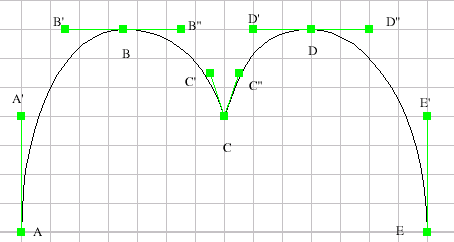
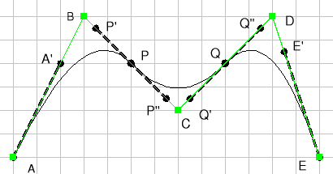
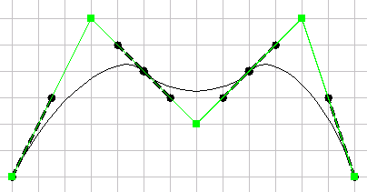

Eine andere Art, den Glättekoeffizienten zu bearbeiten, wird im nachstehenden Abschnitt Das Benutzen des Bezierpunktebearbeitungswerkzeugs … [
 ] beschrieben.
] beschrieben.
Eine erweiterbare Bezier Kurve ist eine Verkettung entweder gerade Segmente oder kubischer Bezier Kurven. Für jeden Unterteilungspunkt (d.h. ein Punkt, der zwei Bezier Kurven, wie A, B, C, D, E in der Abbildung oben verbindet) kann man zwei Eigenschaften den verbindenden Tangenten, nämlich Glattheit und/oder Symmetrie festlegen. Glattheit bedeutet, dass die Tangenten um den Unterteilungspunkt die Eigenschaft erfüllen müssen, parallel zu sein (zum Beispiel ist BB' zum BB'' in der obigen Abbildung parallel). Genauer, wenn Glattheit im Punkt B erforderlich ist und wenn Sie B' mit der Maus verschieben, dann bewegt sich B'' automatisch entsprechend, um die Glattheit aufrechtzuerhalten. Um einen Winkel zu bilden (wie in Punkt C), darf Glattheit NICHT erzwungen werden. Symmetrie in B bedeutet, dass die Länge von BB' und BB'' gleich ist. Symmetrie wird in der obigen Abbildung in allen Punkten erzwungen. Wenn beides, also Symmetrie und Glattheit, in B erforderlich sind, dann sind B' und B'' symmetrisch in Beziehung zu B. Symmetrie und Glattheit haben keinen Effekt auf die Endpunkte A und E.
Wenn man eine Kurve zeichnet oder bearbeitet, werden Symmetrie und Glattheit standardmäßig erzwungen, jedoch ermöglicht Ihnen das Benutzen von Modifikatoren, das Verhalten zu ändern:
Zur Beachtung: diese Kombinationen und ihre dazugehörige Bedeutung werden in der Statuszeile vermerkt.
Sie können diese Eigenschaften auch für alle Punkte gleichzeitig ändern, oder nur für einen speziellen Punkt, indem man eine Kurve auswählt, die Maustaste II klickt, und die entsprechende Aktion aus dem Kontextmenü auswählt. Alternativ bietet Ihnen das Eigenschaftenpanel (drücken Sie dazu die Taste F2) die Möglichkeit, die gleichen Operationen durchzuführen; hier können Sie jedoch präziser arbeiten, denn Sie können die neuen Koordinaten numerisch eingeben. Es ist wichtig zu wissen, dass einige Änderungen irreversibel sind (außer, Sie rufen explizit Macht letzte Aktion rückgängig auf), denn das Erzwingen einer dieser Eigenschaften KANN die Position einiger Kontrollpunkte verändern; derzeit wird so die vorherige Position NICHT gespeichert; deshalb sind die Glattheit- und Symmetrie-Checkboxen im Eigenschaftpanel und die entsprechenden Menüpunkte im Kontextmenü zur Zeit "Einbahnstraßen".
Um eine Bezier Kurve zu begradigen, also einen Polygonzug daraus zu machen, muss man nur die zugehörigen Tangentenendpunkte bewegen, bis sie auf einen Punkt reduziert sind. Um ein Segment zu krümmen, drücken die STRG, STRG+SHIFT, STRG+ALT oder STRG+ALT+SHIFT Modifikatoren, klicken auf jeden Endpunkt des Segments und ziehen die Tangenten entsprechend ihren Vorstellungen. Falls Sie nicht daran denken, die Modifikatoren vor dem Klicken zu drücken, werden die Endpunkte des Segments verschoben, und die zugehörigen Tangenten werden nicht modifiziert. Es sei noch einmal der Hinweis gegeben, das das Eigenschaftsfenster es Ihnen ermöglicht, die ausgewählte Kurve an allen Punkte gleichzeitg oder nur an einem speziellen Punkt zu begradigen. Um die Änderung rückgängig zu machen, rufen Sie einfach aus dem Bearbeiten-Menü den Punkt Rückgängig auf oder klicken in der Werkzeugleiste einfach das entsprechende Icon an.

Ein glattes Polygon ist eine glatte Kurve, die durch einen Polygonzug definiert wird. Zum Beispiel wird das glatte Polygon in der obigen Abbildung durch den Polygonzug ABCDE definiert (in der Abbildung grün). Die Kurve ist immer glatt, und verläuft normalerweise nicht durch die Kontrollpunkte. Die Kurve verläuft aber durch die Mittelpunkte aller Segmente des Polygons (außer der beiden äußeren). Im obigen Beispiel geht die Kurve durch P und Q, welches die Mittelpunkte von [BC] und [CD] sind.
Zu jedem Punkt des glatten Polygons gibt es einen Koeffizienten, der
festlegt, wie nah die Kurve an das Polygon herangeht. Der Standardwert
beträgt 70, sinnvolle Werte liegen generell im Intervall von
50-100. Dieser Koeffizient kannn wie folgt geändert werden: Wählen
Sie das glatte Polygon und drücken Sie die
Taste F2, um das Eigenschaftenfenster zu öffnen;
wenn Sie nicht den Koeffizienten für alle Punkte anpassen möchten,
entfernen Sie einfach einige Häckchen in der Korrigieren Spalte;
anschließend benutzen Sie den Schieberegler, um den Koeffizienten
anzugleichen. Die nachstehende Abbildung zeigt den Effekt, wenn man den Wert
aller Koeffizienten der Punkte auf 50 ändert.
Eine andere Art, den
Glättekoeffizienten zu bearbeiten, wird im nachstehenden
Abschnitt Das Benutzen des
Bezierpunktebearbeitungswerkzeugs … [] beschrieben.

Genauer gesagt ist ein glattes Polygon eine Verkettung von kubischen Bezier Kurven, dessen Kontrollpunkte auf dem Kontrollpolygon liegen (in der obigen Abbildung werden die Kontrollpunkte der Bezier Kurven durch die Endpunkte der fett punktierten Linien repräsentiert). Es sei Koeffizient im Punkt B als c bezeichnet. P' ist dann so gegeben, dass der Vektor PP' c mal der Vektor PB ist. Gleichermaßen ist der Punkt A' so gegeben das der Vektor AA' c mal der Vektor AB ist.
Dies ist eine spezielle Funktion, um Punkte zu einer Bezier Kurve und
glatten Polygonen hinzuzufügen oder zu entfernen, und genauso auch zu
Parallelogrammen und Ellipsen, wenn sie in eine Bezier Kurve transformiert
wurden. Die Funktion kann aufgerufen werden durch
das Symbol im Werkzeugkasten oder im Werkzeuge-Menü
(siehe auch Werkzeugkasten). Zu jeder
Zeit bringt Sie ein Klick mit der Maustaste II zurück zum AUSWAHL Modus
[ ].
].